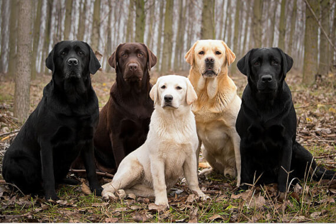

Эта порода одна из самых популярных во всем мире. Однако вопрос ее происхождения до сих пор полон загадок.
Существует множество версий о появлении лабрадоров. Все они сходятся в одном: предки удивительных собак ранее обитали на острове Ньюфаундленд. Скорее всего, они помогали рыбакам добывать улов. Упоминания о ньюфаундлендских собаках встречаются и в описаниях мореплавателей, которые побывали на этих землях еще в 16 веке.
По одной из версий первые лабрадоры как раз и были завезены в Великобританию с острова Ньюфаундленд, где их стали скрещивать с курчавошерстными ретриверами, английскими фоксхаундами и сеттерами. Так и появились современные лабрадоры-ретриверы. Первый официальный стандарт породы был описан в 1887 году. В начале 20 века британским клубом были признаны лабрадоры черного окраса, а затем палевого и шоколадного окрасов. В 1991 году лабрадор возглавил рейтинг пород в США.
Лабрадоры - это не только лучшие домашние питомцы, но и прекрасные рабочие собаки. Они проявляют свои таланты в спасательных и поисковых операциях, а также в качестве собак-поводырей и лекарей.
